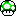
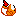

?
Help: <COPY SPECTATE CODE>
 Wins - Rounds played -  Lose streak
Player numbers: (PLAYERKEY)
Press <PLAYERKEY> to add a win.
Hold BACKSPACE and press <PLAYERKEY> for skip.
Hold DELETE and press <PLAYERKEY> to give up.
Hold SHIFT and press <PLAYERKEY> to mark special.
Undo with LEFT ARROW, redo with RIGHT ARROW
MAPKEYS:
A - Luigi Circuit
S - Peach Beach
D - Baby Park
F - Dry Dry Desert
G - Mushroom Bridge
H - Mario Circuit
J - Daisy Cruiser
K - Waluigi Stadium
Z - Sherbet Land
X - Mushroom City
C - Yoshi Circuit
V - DK Mountain
B - Wario Colosseum
N - Dino Dino Jungle
M - Bowser Castle
, - Rainbow Road
Press <MAPKEY> to add a map.
Undo map with MINUS (-), redo map with PLUS (+).